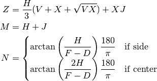
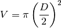
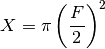

binhop – Hoppered Bins & Tanks¶
Quirk: The legacy program chained to binvol, a program which doesn’t appear on any menu.
We’ll merge binvol – Hoppered Bin Design into this program’s implementation.
Legacy Output¶
Introduction:
HOPPERED BIN ANALYSIS by George Murphy, VE3ERP
│«─ F ─»│
┌───────┐«─┐«─┐
│ bin │ J │
└───────┤«─┤ │
\hopper│ H M
\ │ │ │
└────┘──┘«─┘
─»│ D │«─
This program calculates dimensions and cubic capacity of hoppered rectangular
or round bins and tanks. Dimensions can be entered in any units of measure,
bearing in mind that the calculated results will be in the same units.
To analyze an existing bin......press 1
To design a new bin.............press 2
To EXIT.........................press 0
Menu item 2 runs the binvol program.
Note that this diagram isn’t the same as the center-draw diagram in ref:construction.binvol.
Note that the following sample output has an error in it.
Sample Output:
Press number in ( ) to indicate shape of bin: (1) Round
(2) Rectangular
ENTER: Outlet D..................width =? 3
ENTER: Outlet D.................length =? 8
Press number in ( ) to indicate hopper discharge: (1) Side draw
(2) Center draw
ENTER: Hopper height H.................=? 12
ENTER: Bin width F.....................=? 12
ENTER: Bin length F....................=? 12
ENTER: Bin wall height J...............=? 12
RECTANGULAR BIN, CENTER DRAW HOPPER
│«─ F ─»│
┌───────┐«─┐«─┐
│ bin │ J │
└───────┤«─┤ │
\hopper│ H M
\ │ │ │
└────┘──┘«─┘
─»│ D │«─
Bin width .....................F= 12.000
Bin length ....................G= 12.000
Bin wall height ...............J= 12.000
Hopper height .................H= 12.000
Overall height ................M= 24.000
Outlet width ..................D= 3.000
Outlet length .................D= 8.000
Bin cross-section area .......... 144.000
Cubic capacity .................. 1728.018
Min. hopper slope 69.4°
Want to change hopper height and slope angle? (y/n)
Analysis¶
This is actually two simple calculators:
- Rectangular bins
- Cylindrical bins
Each bin has an optional consideration for side draw vs. center draw. This appears to be a plug-in strategy object or mixin.
While there is some overlap between the two calculators, what’s common is more the broad outline than the details.
Rectangular¶
| D: | Outlet width D |
|---|---|
| E: | Outlet length D |
Center draw vs. side draw choice.
| X: | Bin cross-section area |
|---|---|
| H: | Hopper height H |
| F: | Bin width F |
| G: | Bin length F |
| J: | Bin wall height J |
|---|

Display.
Cylindrical¶
| D: | Outlet diameter D |
|---|
Center draw vs. side draw choice.

| H: | Hopper height H |
|---|---|
| F: | Bin Diameter F |

| J: | Bin wall height J |
|---|
| X: | Bin cross-section area |
|---|---|
| Z: | Cubic Capacity |
| N: | Minimum hopper slope |
Display.
Implementation¶
This is the implementation for this program, as well as binvol – Hoppered Bin Design.
hamcalc.construction.binhop
Calculate volumes of hoppered bins as well as support design of bins.
Analysis¶
There are two functions defined from Rectangular and Cylindrical. These functions don’t have the draw variable set, so there’s a two-step use case.
- Set draw.
- Calculate.
Example:
rectangular.draw= Center()
rectangular( D=3, E=8, H=12, F=12, G=12, J=12 )
- hamcalc.construction.binhop.rectangular(D, E, F, G, H, J)¶
Skeleton function to compute rectangular bin volumes. This requires the draw variable set to a proper instance of Side or Center before any calculation can be done. See Draw below.
Parameters: - D – Outlet width D
- E – Outlet length D
- F – Bin width F
- G – Bin length F
- H – Hopper height H
- J – Bin wall height J
Returns: hamcalc.lib.AttrDict with additional items.
V: Hopper Area X: Bin Cross-section Area Z: Total Volume N: Min Hopper Slope
- hamcalc.construction.binhop.cylindrical(D, F, H, J)¶
Skeleton function to compute cylindrical bin volumes. This requires the draw variable set to a proper instance of Side or Center before any calculation can be done. See Draw below.
Parameters: - D – Outlet Diameter D
- F – Bin Diameter F
- H – Hopper height H
- J – Bin wall height J
Returns: hamcalc.lib.AttrDict with additional items.
V: Hopper Area X: Bin Cross-section Area Z: Total Volume N: Min Hopper Slope
Test Case for analysis:
>>> import hamcalc.construction.binhop as binhop
>>> rect = binhop.Rectangular( draw=binhop.Center() )
>>> bin= rect( D=3, E=8, H=12, F=12, G=12, J=12 )
>>> bin.X
144
>>> bin.V
24
>>> round(bin.N,1)
69.4
>>> round(bin.Z,3)
2635.151
>>> rect.name()
'Rectangular Bin, Center Draw Hopper'
Design¶
The design_hopper() and design_final() functions support design. These require a Shape object, either Square or Circle.
Test Case for design:
>>> import hamcalc.construction.binhop as binhop
>>> result= binhop.design_hopper( binhop.Square(), V=2900, N=70, D=5 )
>>> round(result.V_H)
2900
>>> round(result.F,3)
18.622
>>> round(result.H,3)
18.714
>>> final= binhop.design_final( binhop.Square(), V=2900, N=70, D=5, M=36, H=18.714, F=18.622, V_H=2900 )
>>> round(final.V_T)
2900
>>> round(final.V_H)
2567
>>> round(final.V_B)
333
>>> round(final.J,3)
1.041
>>> round(final.H,3)
17.714
- class hamcalc.construction.binhop.Center[source]¶
Center Draw calculation. This is the .draw attribute of a Hopper.
- class hamcalc.construction.binhop.Draw[source]¶
Strategy class definition for draw placement.
A subclass instance is attached to the Hopper instance.
rectangular.draw = Center()
or
solver= Cylindrical( draw=Side() )
- class hamcalc.construction.binhop.Hopper(draw=None)[source]¶
Abstract superclass for hopper solvers. A subclass must handle the proper geometry of the hopper.
- class hamcalc.construction.binhop.Shape[source]¶
A shape for hopper design purposes. An instance is provided to design_hopper() or design_final().
- class hamcalc.construction.binhop.Side[source]¶
Side draw calculation. This is the .draw attribute of a Hopper.
Quirks¶
Lines 1050 to 1170 seem inaccessible and unused. This may be code from an earlier version of binvol, or perhaps a version of binhop that was some kind of Solver.